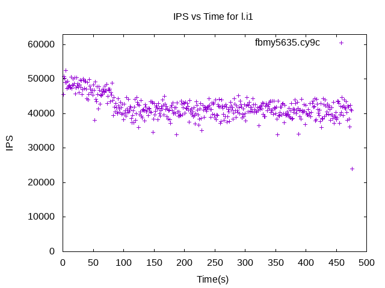
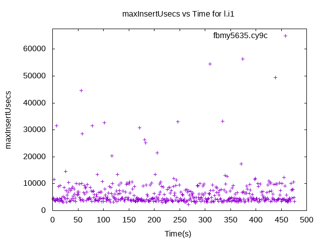
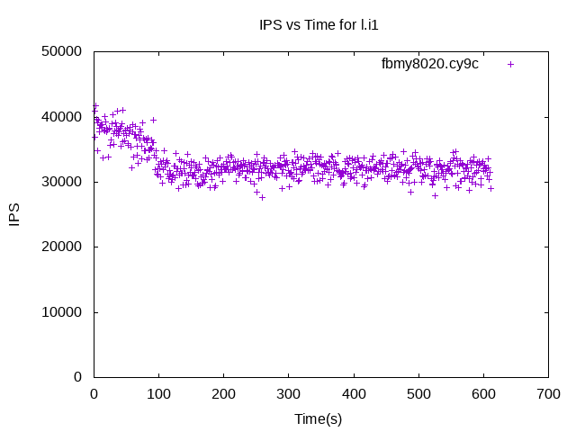
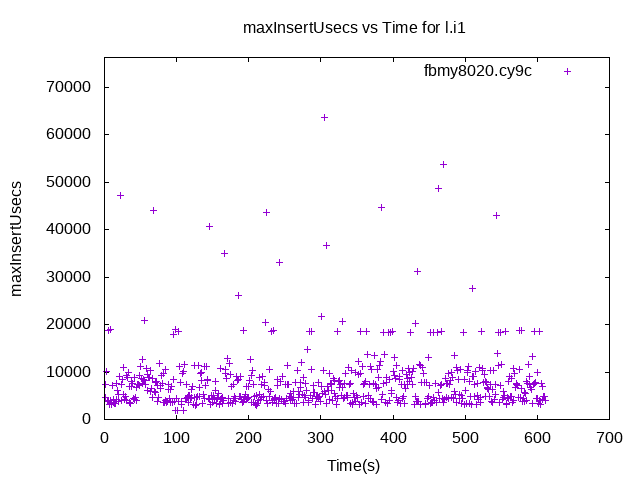

These have results per 1-second interval for: insert rate (IPS) and max insert reponse time.
The results are from 1 client while the test may have N clients where N > 1.
Contents
fbmy5635.cy9c: IPS
fbmy5635.cy9c
fbmy5635.cy9c: max insert response time
fbmy5635.cy9c
fbmy8020.cy9c: IPS
fbmy8020.cy9c
fbmy8020.cy9c: max insert response time
fbmy8020.cy9c